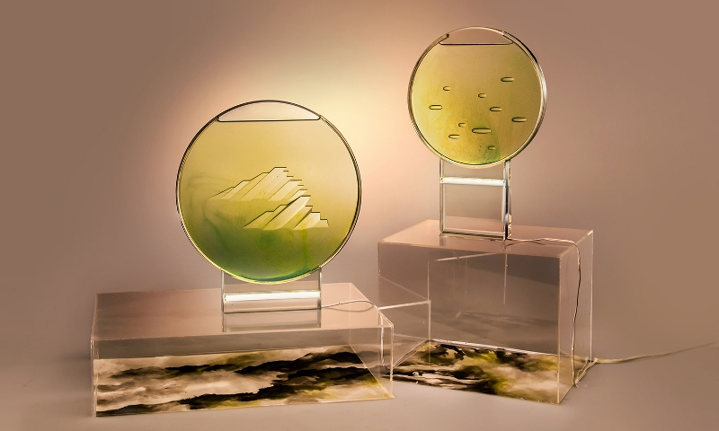
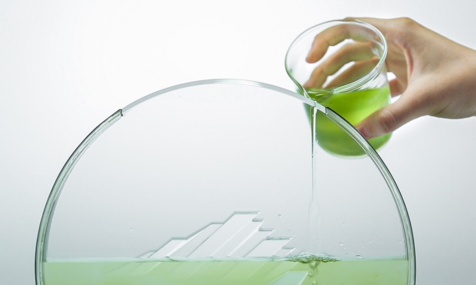
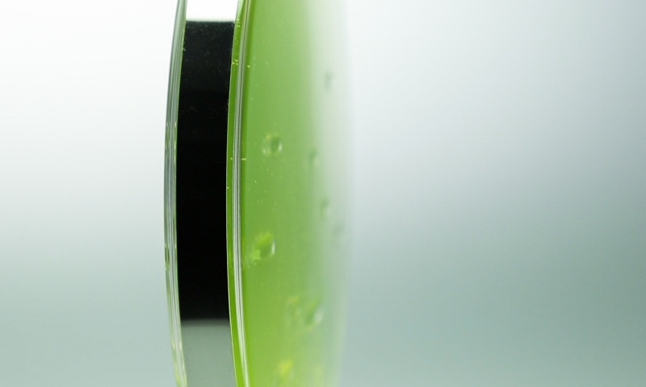

Light is closely linked with life. People need light while many other life forms react directionally to a light source. Inspired by such phenomena, we undertake a lighting design that connects human’s behavior with the phototaxis of the algae.
Light is closely linked with life. People need light while many other life forms react directionally to a light source. Inspired by such phenomena, we undertake a lighting design that connects human’s behavior with the phototaxis of the algae.
 We associate the algae’s flow with the texture of jade and merge oriental elements into the design. By arranging the embossment of the vessel, we manage to lead the algae to compose Chinese landscape paintings.
We associate the algae’s flow with the texture of jade and merge oriental elements into the design. By arranging the embossment of the vessel, we manage to lead the algae to compose Chinese landscape paintings.
 With beams of light, the dynamic image conveys the natural beauty of the life form. Jade Flow presents an oriental aesthetic from life science.
With beams of light, the dynamic image conveys the natural beauty of the life form. Jade Flow presents an oriental aesthetic from life science.

Different contours of mountains are arranged in a stack to create a layeredshape background, which leads the algae to crest and form the image of clouds and mists in the mountains.
MOUNTAIN
Different contours of mountains are arranged in a stack to create a layeredshape background, which leads the algae to crest and form the image of clouds and mists in the mountains.

WATERFALL
Several small stoneshape blocks are placed raise in the middle of the vessel. The algae will be obstructed and guided to both flanks to approach the light, mimicking the effect of a waterfall.

The base is composed of two transparent pieces of acrylic, with an Led light embedded inside, all fixed and supported by a stainlesssteel structure. Between the interval, rays of light attract the algae in the darkness.
LUMINARY
The base is composed of two transparent pieces of acrylic, with an Led light embedded inside, all fixed and supported by a stainlesssteel structure. Between the interval, rays of light attract the algae in the darkness.